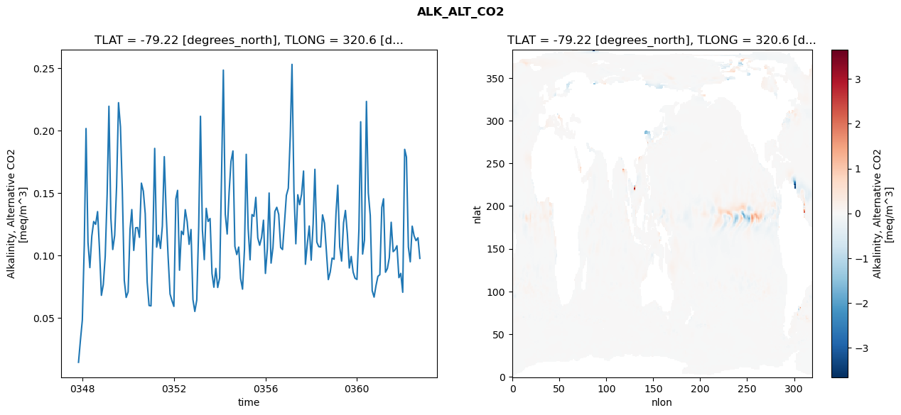
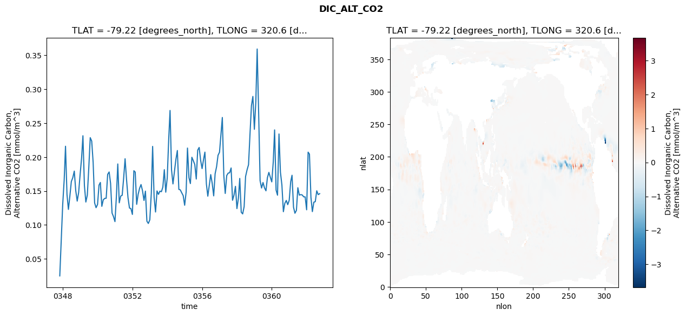
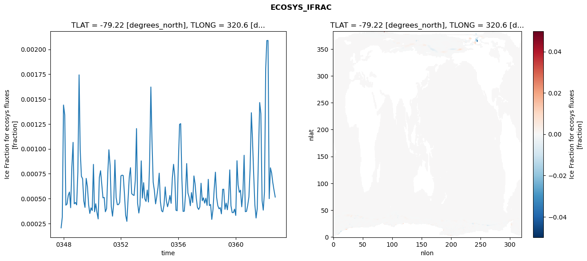
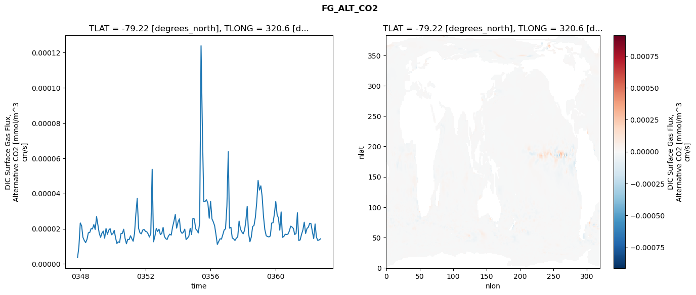

glb-dor_North_Atlantic_basin_002_1999-10-01_00011#
Simulation details#
Case: smyle.cdr-atlas-v0.glb-dor_North_Atlantic_basin_002_1999-10-01_00011.001
Basin: North_Atlantic_basin
Polygon: 2.0
Start date: 1999-10
Show code cell source Hide code cell source
import xarray as xr
import matplotlib.pyplot as plt
Show code cell source Hide code cell source
zarr_store = "/path/to/zarr/store"
# Parameters
zarr_store = "/global/cfs/projectdirs/m4746/Projects/Ocean-CDR-Atlas-v0/data/validation/smyle.cdr-atlas-v0.glb-dor_North_Atlantic_basin_002_1999-10-01_00011.001.validation.zarr"
Show code cell source Hide code cell source
%%time
ds_o = xr.open_zarr(zarr_store).compute()
ds_o
CPU times: user 689 ms, sys: 443 ms, total: 1.13 s
Wall time: 1.37 s
<xarray.Dataset> Size: 2MB
Dimensions: (nlat: 384, nlon: 320, time: 180)
Coordinates:
TLAT float64 8B -79.22
TLONG float64 8B 320.6
ULAT float64 8B -78.95
ULONG float64 8B 321.1
* time (time) object 1kB 0347-11-01 00:00:00 ... 0362-10-01 0...
z_t float32 4B 500.0
Dimensions without coordinates: nlat, nlon
Data variables:
ALK_ALT_CO2_diff (nlat, nlon) float32 492kB nan nan nan ... nan nan nan
ALK_ALT_CO2_rmse (time) float64 1kB 0.01429 0.03175 ... 0.1141 0.09762
DIC_ALT_CO2_diff (nlat, nlon) float32 492kB nan nan nan ... nan nan nan
DIC_ALT_CO2_rmse (time) float64 1kB 0.02481 0.07651 ... 0.1446 0.146
ECOSYS_IFRAC_diff (nlat, nlon) float32 492kB nan nan nan ... nan nan nan
ECOSYS_IFRAC_rmse (time) float64 1kB 0.000206 0.0003141 ... 0.0005155
FG_ALT_CO2_diff (nlat, nlon) float32 492kB nan nan nan ... nan nan nan
FG_ALT_CO2_rmse (time) float64 1kB 3.626e-06 9.681e-06 ... 1.423e-05xarray.Dataset
- nlat: 384
- nlon: 320
- time: 180
- TLAT()float64-79.22
- long_name :
- array of t-grid latitudes
- units :
- degrees_north
array(-79.22052261)
- TLONG()float64320.6
- long_name :
- array of t-grid longitudes
- units :
- degrees_east
array(320.56250892)
- ULAT()float64-78.95
- long_name :
- array of u-grid latitudes
- units :
- degrees_north
array(-78.95289509)
- ULONG()float64321.1
- long_name :
- array of u-grid longitudes
- units :
- degrees_east
array(321.12500894)
- time(time)object0347-11-01 00:00:00 ... 0362-10-...
- bounds :
- time_bound
- long_name :
- time
array([cftime.DatetimeNoLeap(347, 11, 1, 0, 0, 0, 0, has_year_zero=True), cftime.DatetimeNoLeap(347, 12, 1, 0, 0, 0, 0, has_year_zero=True), cftime.DatetimeNoLeap(348, 1, 1, 0, 0, 0, 0, has_year_zero=True), cftime.DatetimeNoLeap(348, 2, 1, 0, 0, 0, 0, has_year_zero=True), cftime.DatetimeNoLeap(348, 3, 1, 0, 0, 0, 0, has_year_zero=True), cftime.DatetimeNoLeap(348, 4, 1, 0, 0, 0, 0, has_year_zero=True), cftime.DatetimeNoLeap(348, 5, 1, 0, 0, 0, 0, has_year_zero=True), cftime.DatetimeNoLeap(348, 6, 1, 0, 0, 0, 0, has_year_zero=True), cftime.DatetimeNoLeap(348, 7, 1, 0, 0, 0, 0, has_year_zero=True), cftime.DatetimeNoLeap(348, 8, 1, 0, 0, 0, 0, has_year_zero=True), cftime.DatetimeNoLeap(348, 9, 1, 0, 0, 0, 0, has_year_zero=True), cftime.DatetimeNoLeap(348, 10, 1, 0, 0, 0, 0, has_year_zero=True), cftime.DatetimeNoLeap(348, 11, 1, 0, 0, 0, 0, has_year_zero=True), cftime.DatetimeNoLeap(348, 12, 1, 0, 0, 0, 0, has_year_zero=True), cftime.DatetimeNoLeap(349, 1, 1, 0, 0, 0, 0, has_year_zero=True), cftime.DatetimeNoLeap(349, 2, 1, 0, 0, 0, 0, has_year_zero=True), cftime.DatetimeNoLeap(349, 3, 1, 0, 0, 0, 0, has_year_zero=True), cftime.DatetimeNoLeap(349, 4, 1, 0, 0, 0, 0, has_year_zero=True), cftime.DatetimeNoLeap(349, 5, 1, 0, 0, 0, 0, has_year_zero=True), cftime.DatetimeNoLeap(349, 6, 1, 0, 0, 0, 0, has_year_zero=True), cftime.DatetimeNoLeap(349, 7, 1, 0, 0, 0, 0, has_year_zero=True), cftime.DatetimeNoLeap(349, 8, 1, 0, 0, 0, 0, has_year_zero=True), cftime.DatetimeNoLeap(349, 9, 1, 0, 0, 0, 0, has_year_zero=True), cftime.DatetimeNoLeap(349, 10, 1, 0, 0, 0, 0, has_year_zero=True), cftime.DatetimeNoLeap(349, 11, 1, 0, 0, 0, 0, has_year_zero=True), cftime.DatetimeNoLeap(349, 12, 1, 0, 0, 0, 0, has_year_zero=True), cftime.DatetimeNoLeap(350, 1, 1, 0, 0, 0, 0, has_year_zero=True), cftime.DatetimeNoLeap(350, 2, 1, 0, 0, 0, 0, has_year_zero=True), cftime.DatetimeNoLeap(350, 3, 1, 0, 0, 0, 0, has_year_zero=True), cftime.DatetimeNoLeap(350, 4, 1, 0, 0, 0, 0, has_year_zero=True), cftime.DatetimeNoLeap(350, 5, 1, 0, 0, 0, 0, has_year_zero=True), cftime.DatetimeNoLeap(350, 6, 1, 0, 0, 0, 0, has_year_zero=True), cftime.DatetimeNoLeap(350, 7, 1, 0, 0, 0, 0, has_year_zero=True), cftime.DatetimeNoLeap(350, 8, 1, 0, 0, 0, 0, has_year_zero=True), cftime.DatetimeNoLeap(350, 9, 1, 0, 0, 0, 0, has_year_zero=True), cftime.DatetimeNoLeap(350, 10, 1, 0, 0, 0, 0, has_year_zero=True), cftime.DatetimeNoLeap(350, 11, 1, 0, 0, 0, 0, has_year_zero=True), cftime.DatetimeNoLeap(350, 12, 1, 0, 0, 0, 0, has_year_zero=True), cftime.DatetimeNoLeap(351, 1, 1, 0, 0, 0, 0, has_year_zero=True), cftime.DatetimeNoLeap(351, 2, 1, 0, 0, 0, 0, has_year_zero=True), cftime.DatetimeNoLeap(351, 3, 1, 0, 0, 0, 0, has_year_zero=True), cftime.DatetimeNoLeap(351, 4, 1, 0, 0, 0, 0, has_year_zero=True), cftime.DatetimeNoLeap(351, 5, 1, 0, 0, 0, 0, has_year_zero=True), cftime.DatetimeNoLeap(351, 6, 1, 0, 0, 0, 0, has_year_zero=True), cftime.DatetimeNoLeap(351, 7, 1, 0, 0, 0, 0, has_year_zero=True), cftime.DatetimeNoLeap(351, 8, 1, 0, 0, 0, 0, has_year_zero=True), cftime.DatetimeNoLeap(351, 9, 1, 0, 0, 0, 0, has_year_zero=True), cftime.DatetimeNoLeap(351, 10, 1, 0, 0, 0, 0, has_year_zero=True), cftime.DatetimeNoLeap(351, 11, 1, 0, 0, 0, 0, has_year_zero=True), cftime.DatetimeNoLeap(351, 12, 1, 0, 0, 0, 0, has_year_zero=True), cftime.DatetimeNoLeap(352, 1, 1, 0, 0, 0, 0, has_year_zero=True), cftime.DatetimeNoLeap(352, 2, 1, 0, 0, 0, 0, has_year_zero=True), cftime.DatetimeNoLeap(352, 3, 1, 0, 0, 0, 0, has_year_zero=True), cftime.DatetimeNoLeap(352, 4, 1, 0, 0, 0, 0, has_year_zero=True), cftime.DatetimeNoLeap(352, 5, 1, 0, 0, 0, 0, has_year_zero=True), cftime.DatetimeNoLeap(352, 6, 1, 0, 0, 0, 0, has_year_zero=True), cftime.DatetimeNoLeap(352, 7, 1, 0, 0, 0, 0, has_year_zero=True), cftime.DatetimeNoLeap(352, 8, 1, 0, 0, 0, 0, has_year_zero=True), cftime.DatetimeNoLeap(352, 9, 1, 0, 0, 0, 0, has_year_zero=True), cftime.DatetimeNoLeap(352, 10, 1, 0, 0, 0, 0, has_year_zero=True), cftime.DatetimeNoLeap(352, 11, 1, 0, 0, 0, 0, has_year_zero=True), cftime.DatetimeNoLeap(352, 12, 1, 0, 0, 0, 0, has_year_zero=True), cftime.DatetimeNoLeap(353, 1, 1, 0, 0, 0, 0, has_year_zero=True), cftime.DatetimeNoLeap(353, 2, 1, 0, 0, 0, 0, has_year_zero=True), cftime.DatetimeNoLeap(353, 3, 1, 0, 0, 0, 0, has_year_zero=True), cftime.DatetimeNoLeap(353, 4, 1, 0, 0, 0, 0, has_year_zero=True), cftime.DatetimeNoLeap(353, 5, 1, 0, 0, 0, 0, has_year_zero=True), cftime.DatetimeNoLeap(353, 6, 1, 0, 0, 0, 0, has_year_zero=True), cftime.DatetimeNoLeap(353, 7, 1, 0, 0, 0, 0, has_year_zero=True), cftime.DatetimeNoLeap(353, 8, 1, 0, 0, 0, 0, has_year_zero=True), cftime.DatetimeNoLeap(353, 9, 1, 0, 0, 0, 0, has_year_zero=True), cftime.DatetimeNoLeap(353, 10, 1, 0, 0, 0, 0, has_year_zero=True), cftime.DatetimeNoLeap(353, 11, 1, 0, 0, 0, 0, has_year_zero=True), cftime.DatetimeNoLeap(353, 12, 1, 0, 0, 0, 0, has_year_zero=True), cftime.DatetimeNoLeap(354, 1, 1, 0, 0, 0, 0, has_year_zero=True), cftime.DatetimeNoLeap(354, 2, 1, 0, 0, 0, 0, has_year_zero=True), cftime.DatetimeNoLeap(354, 3, 1, 0, 0, 0, 0, has_year_zero=True), cftime.DatetimeNoLeap(354, 4, 1, 0, 0, 0, 0, has_year_zero=True), cftime.DatetimeNoLeap(354, 5, 1, 0, 0, 0, 0, has_year_zero=True), cftime.DatetimeNoLeap(354, 6, 1, 0, 0, 0, 0, has_year_zero=True), cftime.DatetimeNoLeap(354, 7, 1, 0, 0, 0, 0, has_year_zero=True), cftime.DatetimeNoLeap(354, 8, 1, 0, 0, 0, 0, has_year_zero=True), cftime.DatetimeNoLeap(354, 9, 1, 0, 0, 0, 0, has_year_zero=True), cftime.DatetimeNoLeap(354, 10, 1, 0, 0, 0, 0, has_year_zero=True), cftime.DatetimeNoLeap(354, 11, 1, 0, 0, 0, 0, has_year_zero=True), cftime.DatetimeNoLeap(354, 12, 1, 0, 0, 0, 0, has_year_zero=True), cftime.DatetimeNoLeap(355, 1, 1, 0, 0, 0, 0, has_year_zero=True), cftime.DatetimeNoLeap(355, 2, 1, 0, 0, 0, 0, has_year_zero=True), cftime.DatetimeNoLeap(355, 3, 1, 0, 0, 0, 0, has_year_zero=True), cftime.DatetimeNoLeap(355, 4, 1, 0, 0, 0, 0, has_year_zero=True), cftime.DatetimeNoLeap(355, 5, 1, 0, 0, 0, 0, has_year_zero=True), cftime.DatetimeNoLeap(355, 6, 1, 0, 0, 0, 0, has_year_zero=True), cftime.DatetimeNoLeap(355, 7, 1, 0, 0, 0, 0, has_year_zero=True), cftime.DatetimeNoLeap(355, 8, 1, 0, 0, 0, 0, has_year_zero=True), cftime.DatetimeNoLeap(355, 9, 1, 0, 0, 0, 0, has_year_zero=True), cftime.DatetimeNoLeap(355, 10, 1, 0, 0, 0, 0, has_year_zero=True), cftime.DatetimeNoLeap(355, 11, 1, 0, 0, 0, 0, has_year_zero=True), cftime.DatetimeNoLeap(355, 12, 1, 0, 0, 0, 0, has_year_zero=True), cftime.DatetimeNoLeap(356, 1, 1, 0, 0, 0, 0, has_year_zero=True), cftime.DatetimeNoLeap(356, 2, 1, 0, 0, 0, 0, has_year_zero=True), cftime.DatetimeNoLeap(356, 3, 1, 0, 0, 0, 0, has_year_zero=True), cftime.DatetimeNoLeap(356, 4, 1, 0, 0, 0, 0, has_year_zero=True), cftime.DatetimeNoLeap(356, 5, 1, 0, 0, 0, 0, has_year_zero=True), cftime.DatetimeNoLeap(356, 6, 1, 0, 0, 0, 0, has_year_zero=True), cftime.DatetimeNoLeap(356, 7, 1, 0, 0, 0, 0, has_year_zero=True), cftime.DatetimeNoLeap(356, 8, 1, 0, 0, 0, 0, has_year_zero=True), cftime.DatetimeNoLeap(356, 9, 1, 0, 0, 0, 0, has_year_zero=True), cftime.DatetimeNoLeap(356, 10, 1, 0, 0, 0, 0, has_year_zero=True), cftime.DatetimeNoLeap(356, 11, 1, 0, 0, 0, 0, has_year_zero=True), cftime.DatetimeNoLeap(356, 12, 1, 0, 0, 0, 0, has_year_zero=True), cftime.DatetimeNoLeap(357, 1, 1, 0, 0, 0, 0, has_year_zero=True), cftime.DatetimeNoLeap(357, 2, 1, 0, 0, 0, 0, has_year_zero=True), cftime.DatetimeNoLeap(357, 3, 1, 0, 0, 0, 0, has_year_zero=True), cftime.DatetimeNoLeap(357, 4, 1, 0, 0, 0, 0, has_year_zero=True), cftime.DatetimeNoLeap(357, 5, 1, 0, 0, 0, 0, has_year_zero=True), cftime.DatetimeNoLeap(357, 6, 1, 0, 0, 0, 0, has_year_zero=True), cftime.DatetimeNoLeap(357, 7, 1, 0, 0, 0, 0, has_year_zero=True), cftime.DatetimeNoLeap(357, 8, 1, 0, 0, 0, 0, has_year_zero=True), cftime.DatetimeNoLeap(357, 9, 1, 0, 0, 0, 0, has_year_zero=True), cftime.DatetimeNoLeap(357, 10, 1, 0, 0, 0, 0, has_year_zero=True), cftime.DatetimeNoLeap(357, 11, 1, 0, 0, 0, 0, has_year_zero=True), cftime.DatetimeNoLeap(357, 12, 1, 0, 0, 0, 0, has_year_zero=True), cftime.DatetimeNoLeap(358, 1, 1, 0, 0, 0, 0, has_year_zero=True), cftime.DatetimeNoLeap(358, 2, 1, 0, 0, 0, 0, has_year_zero=True), cftime.DatetimeNoLeap(358, 3, 1, 0, 0, 0, 0, has_year_zero=True), cftime.DatetimeNoLeap(358, 4, 1, 0, 0, 0, 0, has_year_zero=True), cftime.DatetimeNoLeap(358, 5, 1, 0, 0, 0, 0, has_year_zero=True), cftime.DatetimeNoLeap(358, 6, 1, 0, 0, 0, 0, has_year_zero=True), cftime.DatetimeNoLeap(358, 7, 1, 0, 0, 0, 0, has_year_zero=True), cftime.DatetimeNoLeap(358, 8, 1, 0, 0, 0, 0, has_year_zero=True), cftime.DatetimeNoLeap(358, 9, 1, 0, 0, 0, 0, has_year_zero=True), cftime.DatetimeNoLeap(358, 10, 1, 0, 0, 0, 0, has_year_zero=True), cftime.DatetimeNoLeap(358, 11, 1, 0, 0, 0, 0, has_year_zero=True), cftime.DatetimeNoLeap(358, 12, 1, 0, 0, 0, 0, has_year_zero=True), cftime.DatetimeNoLeap(359, 1, 1, 0, 0, 0, 0, has_year_zero=True), cftime.DatetimeNoLeap(359, 2, 1, 0, 0, 0, 0, has_year_zero=True), cftime.DatetimeNoLeap(359, 3, 1, 0, 0, 0, 0, has_year_zero=True), cftime.DatetimeNoLeap(359, 4, 1, 0, 0, 0, 0, has_year_zero=True), cftime.DatetimeNoLeap(359, 5, 1, 0, 0, 0, 0, has_year_zero=True), cftime.DatetimeNoLeap(359, 6, 1, 0, 0, 0, 0, has_year_zero=True), cftime.DatetimeNoLeap(359, 7, 1, 0, 0, 0, 0, has_year_zero=True), cftime.DatetimeNoLeap(359, 8, 1, 0, 0, 0, 0, has_year_zero=True), cftime.DatetimeNoLeap(359, 9, 1, 0, 0, 0, 0, has_year_zero=True), cftime.DatetimeNoLeap(359, 10, 1, 0, 0, 0, 0, has_year_zero=True), cftime.DatetimeNoLeap(359, 11, 1, 0, 0, 0, 0, has_year_zero=True), cftime.DatetimeNoLeap(359, 12, 1, 0, 0, 0, 0, has_year_zero=True), cftime.DatetimeNoLeap(360, 1, 1, 0, 0, 0, 0, has_year_zero=True), cftime.DatetimeNoLeap(360, 2, 1, 0, 0, 0, 0, has_year_zero=True), cftime.DatetimeNoLeap(360, 3, 1, 0, 0, 0, 0, has_year_zero=True), cftime.DatetimeNoLeap(360, 4, 1, 0, 0, 0, 0, has_year_zero=True), cftime.DatetimeNoLeap(360, 5, 1, 0, 0, 0, 0, has_year_zero=True), cftime.DatetimeNoLeap(360, 6, 1, 0, 0, 0, 0, has_year_zero=True), cftime.DatetimeNoLeap(360, 7, 1, 0, 0, 0, 0, has_year_zero=True), cftime.DatetimeNoLeap(360, 8, 1, 0, 0, 0, 0, has_year_zero=True), cftime.DatetimeNoLeap(360, 9, 1, 0, 0, 0, 0, has_year_zero=True), cftime.DatetimeNoLeap(360, 10, 1, 0, 0, 0, 0, has_year_zero=True), cftime.DatetimeNoLeap(360, 11, 1, 0, 0, 0, 0, has_year_zero=True), cftime.DatetimeNoLeap(360, 12, 1, 0, 0, 0, 0, has_year_zero=True), cftime.DatetimeNoLeap(361, 1, 1, 0, 0, 0, 0, has_year_zero=True), cftime.DatetimeNoLeap(361, 2, 1, 0, 0, 0, 0, has_year_zero=True), cftime.DatetimeNoLeap(361, 3, 1, 0, 0, 0, 0, has_year_zero=True), cftime.DatetimeNoLeap(361, 4, 1, 0, 0, 0, 0, has_year_zero=True), cftime.DatetimeNoLeap(361, 5, 1, 0, 0, 0, 0, has_year_zero=True), cftime.DatetimeNoLeap(361, 6, 1, 0, 0, 0, 0, has_year_zero=True), cftime.DatetimeNoLeap(361, 7, 1, 0, 0, 0, 0, has_year_zero=True), cftime.DatetimeNoLeap(361, 8, 1, 0, 0, 0, 0, has_year_zero=True), cftime.DatetimeNoLeap(361, 9, 1, 0, 0, 0, 0, has_year_zero=True), cftime.DatetimeNoLeap(361, 10, 1, 0, 0, 0, 0, has_year_zero=True), cftime.DatetimeNoLeap(361, 11, 1, 0, 0, 0, 0, has_year_zero=True), cftime.DatetimeNoLeap(361, 12, 1, 0, 0, 0, 0, has_year_zero=True), cftime.DatetimeNoLeap(362, 1, 1, 0, 0, 0, 0, has_year_zero=True), cftime.DatetimeNoLeap(362, 2, 1, 0, 0, 0, 0, has_year_zero=True), cftime.DatetimeNoLeap(362, 3, 1, 0, 0, 0, 0, has_year_zero=True), cftime.DatetimeNoLeap(362, 4, 1, 0, 0, 0, 0, has_year_zero=True), cftime.DatetimeNoLeap(362, 5, 1, 0, 0, 0, 0, has_year_zero=True), cftime.DatetimeNoLeap(362, 6, 1, 0, 0, 0, 0, has_year_zero=True), cftime.DatetimeNoLeap(362, 7, 1, 0, 0, 0, 0, has_year_zero=True), cftime.DatetimeNoLeap(362, 8, 1, 0, 0, 0, 0, has_year_zero=True), cftime.DatetimeNoLeap(362, 9, 1, 0, 0, 0, 0, has_year_zero=True), cftime.DatetimeNoLeap(362, 10, 1, 0, 0, 0, 0, has_year_zero=True)], dtype=object) - z_t()float32500.0
- long_name :
- depth from surface to midpoint of layer
- positive :
- down
- units :
- centimeters
- valid_max :
- 537500.0
- valid_min :
- 500.0
array(500., dtype=float32)
- ALK_ALT_CO2_diff(nlat, nlon)float32nan nan nan nan ... nan nan nan nan
- cell_methods :
- time: mean
- grid_loc :
- 3111
- long_name :
- Alkalinity, Alternative CO2
- units :
- meq/m^3
array([[ nan, nan, nan, ..., nan, nan, nan], [ nan, nan, nan, ..., nan, nan, nan], [ 0.02294922, -0.00439453, -0.00195312, ..., nan, nan, nan], ..., [ nan, nan, nan, ..., nan, nan, nan], [ nan, nan, nan, ..., nan, nan, nan], [ nan, nan, nan, ..., nan, nan, nan]], dtype=float32) - ALK_ALT_CO2_rmse(time)float640.01429 0.03175 ... 0.1141 0.09762
- cell_methods :
- time: mean
- grid_loc :
- 3111
- long_name :
- Alkalinity, Alternative CO2
- units :
- meq/m^3
array([0.01429352, 0.03174608, 0.0482521 , 0.10835899, 0.20173007, 0.11045723, 0.09022102, 0.11549037, 0.12717649, 0.12492123, 0.1351148 , 0.10551865, 0.0679928 , 0.0765049 , 0.09933029, 0.14946407, 0.21958953, 0.12993653, 0.10473712, 0.11613418, 0.15509694, 0.22244495, 0.2030524 , 0.15140676, 0.07997353, 0.06630668, 0.07073424, 0.12104724, 0.13673879, 0.10402564, 0.12210574, 0.12232531, 0.1144721 , 0.15792761, 0.15146668, 0.13341861, 0.0785245 , 0.0598312 , 0.05950682, 0.11558611, 0.18578755, 0.10665299, 0.11614691, 0.10557528, 0.12346541, 0.17915763, 0.13261062, 0.09890473, 0.06902166, 0.06371764, 0.05911286, 0.14520926, 0.15214269, 0.08812752, 0.11942783, 0.11668845, 0.13663974, 0.12704842, 0.10886394, 0.12075318, 0.06458409, 0.05508866, 0.06422276, 0.12298497, 0.21154541, 0.12034857, 0.09663655, 0.13772416, 0.12721083, 0.12958774, 0.08543335, 0.07449569, 0.08954997, 0.07429803, 0.08195525, 0.16633311, 0.24855693, 0.1329623 , 0.1171567 , 0.15057324, 0.17545945, 0.18373579, 0.10721413, 0.10066764, 0.1066703 , 0.08142672, 0.07295931, 0.10495207, 0.18102826, 0.12144504, 0.09645509, 0.13274208, 0.13129832, 0.14652456, 0.11405269, 0.10813928, 0.11438375, 0.1282137 , 0.08555374, 0.10530155, 0.1500251 , 0.09383402, 0.10621983, 0.13525084, 0.13857007, 0.13281007, 0.10632735, 0.10468844, 0.12608427, 0.14809745, 0.15385211, 0.19563743, 0.25316352, 0.15136511, 0.10930421, 0.14861426, 0.14066719, 0.14913554, 0.16763806, 0.0928753 , 0.10970491, 0.12357489, 0.09618965, 0.12525973, 0.16902932, 0.11065434, 0.10704483, 0.10673953, 0.13248128, 0.1258454 , 0.10287429, 0.08063947, 0.08678719, 0.09783126, 0.0969112 , 0.13406596, 0.15627087, 0.1068997 , 0.09548578, 0.12609712, 0.13603145, 0.11704955, 0.08992027, 0.09913618, 0.08664487, 0.08172994, 0.08072573, 0.12078012, 0.20712838, 0.10108524, 0.11233464, 0.22344768, 0.15008817, 0.13200229, 0.0716712 , 0.06656687, 0.07584859, 0.08321895, 0.08452405, 0.13842943, 0.14536254, 0.08650219, 0.08946988, 0.09814418, 0.12656916, 0.10299534, 0.10456485, 0.10773794, 0.08215665, 0.08561298, 0.07043928, 0.18502061, 0.17888857, 0.10670461, 0.09486776, 0.12343342, 0.11568784, 0.11183571, 0.11413678, 0.09762242]) - DIC_ALT_CO2_diff(nlat, nlon)float32nan nan nan nan ... nan nan nan nan
- cell_methods :
- time: mean
- grid_loc :
- 3111
- long_name :
- Dissolved Inorganic Carbon, Alternative CO2
- units :
- mmol/m^3
array([[ nan, nan, nan, ..., nan, nan, nan], [ nan, nan, nan, ..., nan, nan, nan], [0.02807617, 0.00610352, 0.00756836, ..., nan, nan, nan], ..., [ nan, nan, nan, ..., nan, nan, nan], [ nan, nan, nan, ..., nan, nan, nan], [ nan, nan, nan, ..., nan, nan, nan]], dtype=float32) - DIC_ALT_CO2_rmse(time)float640.02481 0.07651 ... 0.1446 0.146
- cell_methods :
- time: mean
- grid_loc :
- 3111
- long_name :
- Dissolved Inorganic Carbon, Alternative CO2
- units :
- mmol/m^3
array([0.02480502, 0.07651471, 0.12970853, 0.16604145, 0.21592 , 0.14474527, 0.1228102 , 0.14295711, 0.16391225, 0.1696785 , 0.17927853, 0.15072486, 0.13505896, 0.14764224, 0.17421556, 0.19858408, 0.23140585, 0.15783513, 0.13368978, 0.14395364, 0.18327917, 0.22862671, 0.22346362, 0.19196113, 0.13235177, 0.12534504, 0.13001383, 0.15867857, 0.16253223, 0.1273533 , 0.1368927 , 0.13909011, 0.13921871, 0.1744574 , 0.17799709, 0.16127968, 0.11746251, 0.11224403, 0.10479907, 0.14335424, 0.18982263, 0.13253597, 0.14249878, 0.14360984, 0.16808547, 0.19748449, 0.16641643, 0.14012984, 0.12482495, 0.12401751, 0.11543049, 0.17984036, 0.17790148, 0.1302736 , 0.14487933, 0.15399118, 0.15946199, 0.15041783, 0.13605066, 0.14973806, 0.1054102 , 0.10209519, 0.10742043, 0.14625056, 0.21569234, 0.14076496, 0.11897442, 0.1500665 , 0.14496224, 0.14972363, 0.14894883, 0.15571858, 0.18137863, 0.14821483, 0.16926409, 0.22677562, 0.26869363, 0.181061 , 0.16038224, 0.1789266 , 0.19641449, 0.20963945, 0.1523407 , 0.15165084, 0.14723559, 0.14317694, 0.12895987, 0.14861483, 0.21325849, 0.16954716, 0.16093809, 0.19970618, 0.19458714, 0.18905539, 0.16757148, 0.21018372, 0.2141499 , 0.19541548, 0.18299379, 0.1967384 , 0.2072667 , 0.16038096, 0.14233992, 0.15826144, 0.17412855, 0.16121757, 0.14277692, 0.17536959, 0.18586153, 0.20257095, 0.20711401, 0.2344812 , 0.25833553, 0.17297177, 0.14632939, 0.17274254, 0.17629796, 0.17683994, 0.18392609, 0.13631203, 0.14395348, 0.15681152, 0.12403603, 0.13953134, 0.16849364, 0.11860954, 0.11618497, 0.12694868, 0.1713366 , 0.18103934, 0.18872284, 0.232938 , 0.27589848, 0.2893807 , 0.24086975, 0.28195314, 0.35930036, 0.2644663 , 0.16525365, 0.1543213 , 0.16247515, 0.1546645 , 0.150209 , 0.16948287, 0.17740052, 0.17029632, 0.16338464, 0.1929672 , 0.24002248, 0.15124604, 0.14379052, 0.23402625, 0.17777359, 0.15876871, 0.11943792, 0.13178916, 0.13602728, 0.12980641, 0.13616787, 0.16378365, 0.17313919, 0.12617138, 0.11716469, 0.12138239, 0.15478059, 0.14384833, 0.1446463 , 0.14406986, 0.14131416, 0.141298 , 0.12224232, 0.20721272, 0.20435899, 0.14065019, 0.11955695, 0.13351254, 0.13421254, 0.15025842, 0.14460634, 0.14600963]) - ECOSYS_IFRAC_diff(nlat, nlon)float32nan nan nan nan ... nan nan nan nan
- cell_methods :
- time: mean
- grid_loc :
- 2110
- long_name :
- Ice Fraction for ecosys fluxes
- units :
- fraction
array([[ nan, nan, nan, ..., nan, nan, nan], [ nan, nan, nan, ..., nan, nan, nan], [8.3446503e-07, 2.5629997e-06, 1.2099743e-05, ..., nan, nan, nan], ..., [ nan, nan, nan, ..., nan, nan, nan], [ nan, nan, nan, ..., nan, nan, nan], [ nan, nan, nan, ..., nan, nan, nan]], dtype=float32) - ECOSYS_IFRAC_rmse(time)float640.000206 0.0003141 ... 0.0005155
- cell_methods :
- time: mean
- grid_loc :
- 2110
- long_name :
- Ice Fraction for ecosys fluxes
- units :
- fraction
array([0.00020602, 0.00031408, 0.00144054, 0.00134258, 0.00043405, 0.00044591, 0.00053301, 0.00056619, 0.00040851, 0.00081873, 0.00106508, 0.00044775, 0.00046088, 0.00043719, 0.00077171, 0.00174352, 0.00098911, 0.00072453, 0.0007 , 0.00047574, 0.00041162, 0.00070349, 0.00062054, 0.00044023, 0.00035079, 0.00040715, 0.00038021, 0.000844 , 0.00036781, 0.00044819, 0.00036207, 0.00029611, 0.00071334, 0.00078032, 0.00064277, 0.00050776, 0.0005123 , 0.00036774, 0.00039855, 0.00075546, 0.00099101, 0.00082979, 0.00041869, 0.00032362, 0.00045338, 0.00088798, 0.0005094 , 0.0004391 , 0.00043988, 0.00046273, 0.00072863, 0.00073583, 0.00073112, 0.00054219, 0.0003327 , 0.00027141, 0.00049164, 0.00071489, 0.00081067, 0.00055007, 0.00053814, 0.0005318 , 0.00068194, 0.00120396, 0.00045454, 0.0003551 , 0.00043365, 0.00087945, 0.00050534, 0.00066037, 0.00049648, 0.00047169, 0.00058607, 0.00046592, 0.00088253, 0.00162149, 0.00109336, 0.00066406, 0.00058211, 0.00044716, 0.00051974, 0.00060978, 0.00075575, 0.00047039, 0.00037776, 0.00036696, 0.00043458, 0.00061723, 0.00048193, 0.00041838, 0.00046321, 0.00053109, 0.00045262, 0.00070792, 0.00084466, 0.00072444, 0.00038379, 0.00037794, 0.00085886, 0.00124648, 0.00125323, 0.0006985 , 0.00037124, 0.00037351, 0.00053745, 0.00085234, 0.00055701, 0.00051446, 0.00042857, 0.00056062, 0.00046095, 0.00072786, 0.0006527 , 0.00050716, 0.00041162, 0.00039112, 0.0004163 , 0.00065443, 0.00047799, 0.00050804, 0.00045448, 0.00050425, 0.0004318 , 0.00069365, 0.0004299 , 0.00044097, 0.00029118, 0.00039139, 0.00059387, 0.00076555, 0.00051171, 0.00042915, 0.00039819, 0.00040884, 0.00034704, 0.00059337, 0.00059437, 0.00039257, 0.00045499, 0.00038792, 0.00049554, 0.00078874, 0.00042791, 0.00035993, 0.00035919, 0.00039447, 0.00033104, 0.0008807 , 0.00063932, 0.00056304, 0.00058509, 0.00041789, 0.00054956, 0.00093564, 0.0003687 , 0.00037148, 0.0004342 , 0.00051618, 0.00080225, 0.00136318, 0.00110271, 0.00074828, 0.00043886, 0.00030506, 0.00040073, 0.00092608, 0.00146558, 0.0013561 , 0.00048017, 0.00038429, 0.00057146, 0.00180562, 0.00208844, 0.00208924, 0.00049966, 0.00080955, 0.0007579 , 0.00066039, 0.00058221, 0.00051549]) - FG_ALT_CO2_diff(nlat, nlon)float32nan nan nan nan ... nan nan nan nan
- cell_methods :
- time: mean
- grid_loc :
- 2110
- long_name :
- DIC Surface Gas Flux, Alternative CO2
- units :
- mmol/m^3 cm/s
array([[ nan, nan, nan, ..., nan, nan, nan], [ nan, nan, nan, ..., nan, nan, nan], [-8.26219093e-09, -1.59253091e-08, -1.03093765e-08, ..., nan, nan, nan], ..., [ nan, nan, nan, ..., nan, nan, nan], [ nan, nan, nan, ..., nan, nan, nan], [ nan, nan, nan, ..., nan, nan, nan]], dtype=float32) - FG_ALT_CO2_rmse(time)float643.626e-06 9.681e-06 ... 1.423e-05
- cell_methods :
- time: mean
- grid_loc :
- 2110
- long_name :
- DIC Surface Gas Flux, Alternative CO2
- units :
- mmol/m^3 cm/s
array([3.62596939e-06, 9.68060016e-06, 2.32714692e-05, 2.15302773e-05, 1.51471341e-05, 1.33225408e-05, 1.20956956e-05, 1.39780611e-05, 1.76845213e-05, 1.78355037e-05, 2.00733145e-05, 1.98858713e-05, 2.23522462e-05, 1.95967894e-05, 2.68398203e-05, 2.20341863e-05, 1.75177447e-05, 1.50852373e-05, 1.74762580e-05, 1.86374287e-05, 1.46138389e-05, 2.01131262e-05, 1.68036720e-05, 1.91667360e-05, 2.00273580e-05, 1.65914629e-05, 1.71508111e-05, 1.90630694e-05, 1.50745733e-05, 1.15987679e-05, 1.25619668e-05, 1.22023604e-05, 1.71755513e-05, 1.73546645e-05, 1.96970325e-05, 1.46025802e-05, 1.14464721e-05, 1.39573572e-05, 1.38221905e-05, 1.59734699e-05, 1.44061564e-05, 1.28884121e-05, 1.72722544e-05, 2.85390760e-05, 3.71729560e-05, 2.01643955e-05, 1.76063484e-05, 1.71140595e-05, 1.92331089e-05, 1.96075717e-05, 1.85052151e-05, 1.82327395e-05, 1.70850470e-05, 1.52427766e-05, 1.73461690e-05, 5.37435169e-05, 1.25847228e-05, 1.57340532e-05, 2.01699984e-05, 1.84063283e-05, 1.97506875e-05, 1.66678766e-05, 1.72758754e-05, 2.07485296e-05, 1.56639856e-05, 1.43521800e-05, 1.38697694e-05, 1.58674516e-05, 1.68900268e-05, 1.63471802e-05, 2.09214799e-05, 2.41495062e-05, 2.80707146e-05, 2.03076265e-05, 2.37324520e-05, 2.55784937e-05, 1.85347131e-05, 1.73582146e-05, 1.79961517e-05, 1.97544651e-05, ... 2.39586539e-05, 2.17141972e-05, 1.67586212e-05, 1.10755108e-05, 1.27234571e-05, 1.42877005e-05, 1.40860735e-05, 1.65469765e-05, 1.92977679e-05, 1.98919655e-05, 3.28090902e-05, 6.36914622e-05, 2.03093879e-05, 2.08569639e-05, 1.47633888e-05, 1.42337482e-05, 1.33347991e-05, 1.45980452e-05, 1.53796290e-05, 2.43397029e-05, 1.97558104e-05, 1.81955371e-05, 1.71256928e-05, 1.91101042e-05, 2.42080989e-05, 3.26614481e-05, 1.74323214e-05, 1.25910995e-05, 1.51748239e-05, 2.12174251e-05, 2.18820713e-05, 2.64726412e-05, 3.50802505e-05, 4.74075696e-05, 4.19345646e-05, 4.43552717e-05, 3.84924820e-05, 2.69761255e-05, 1.95409879e-05, 1.59854912e-05, 1.55689331e-05, 1.53270745e-05, 1.58688945e-05, 2.31866097e-05, 2.33457835e-05, 2.83557284e-05, 3.54088611e-05, 2.78458277e-05, 2.61585743e-05, 1.91458223e-05, 2.95484694e-05, 1.50800640e-05, 1.56187373e-05, 1.68504389e-05, 1.66793650e-05, 1.69034992e-05, 1.86704947e-05, 2.14336194e-05, 2.09513784e-05, 2.01088041e-05, 1.66905046e-05, 1.72854423e-05, 2.90303200e-05, 1.32881905e-05, 1.36085605e-05, 1.67217634e-05, 1.92886531e-05, 2.36904394e-05, 1.72855789e-05, 2.00634446e-05, 2.08776859e-05, 2.30932073e-05, 2.28417426e-05, 1.83242584e-05, 1.44064188e-05, 2.26847697e-05, 1.52290240e-05, 1.33122960e-05, 1.36594240e-05, 1.42276136e-05])
- timePandasIndex
PandasIndex(CFTimeIndex([0347-11-01 00:00:00, 0347-12-01 00:00:00, 0348-01-01 00:00:00, 0348-02-01 00:00:00, 0348-03-01 00:00:00, 0348-04-01 00:00:00, 0348-05-01 00:00:00, 0348-06-01 00:00:00, 0348-07-01 00:00:00, 0348-08-01 00:00:00, ... 0362-01-01 00:00:00, 0362-02-01 00:00:00, 0362-03-01 00:00:00, 0362-04-01 00:00:00, 0362-05-01 00:00:00, 0362-06-01 00:00:00, 0362-07-01 00:00:00, 0362-08-01 00:00:00, 0362-09-01 00:00:00, 0362-10-01 00:00:00], dtype='object', length=180, calendar='noleap', freq='MS'))
Show code cell source Hide code cell source
variables = [v[:-5] for v in ds_o.variables if "_rmse" in v]
Show code cell source Hide code cell source
plt.rcParams.update({'figure.max_open_warning': 0})
for v in variables:
fig, axs = plt.subplots(1, 2, figsize=(15, 6))
ds_o[f"{v}_rmse"].plot(ax=axs[0])
ds_o[f"{v}_diff"].plot(ax=axs[1])
plt.suptitle(v, fontweight="bold")



